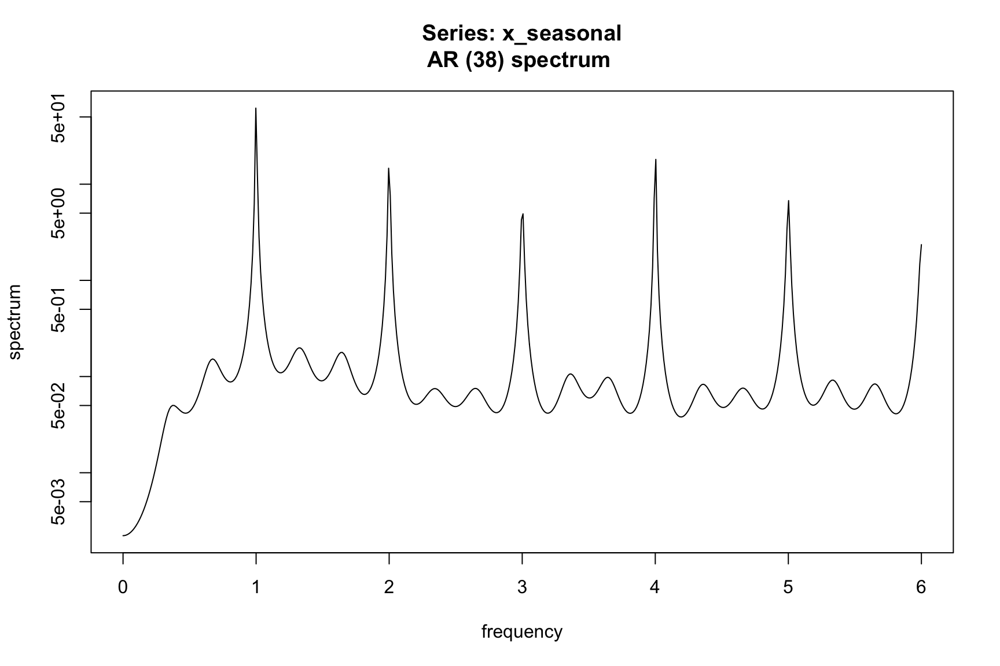
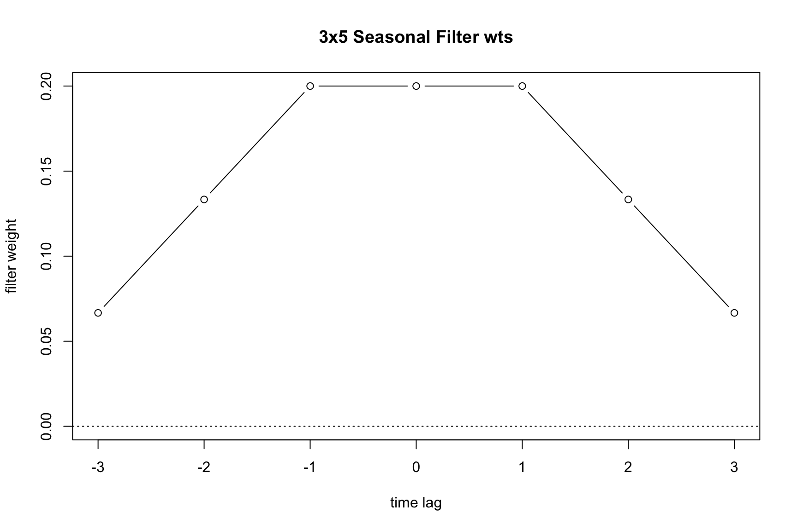
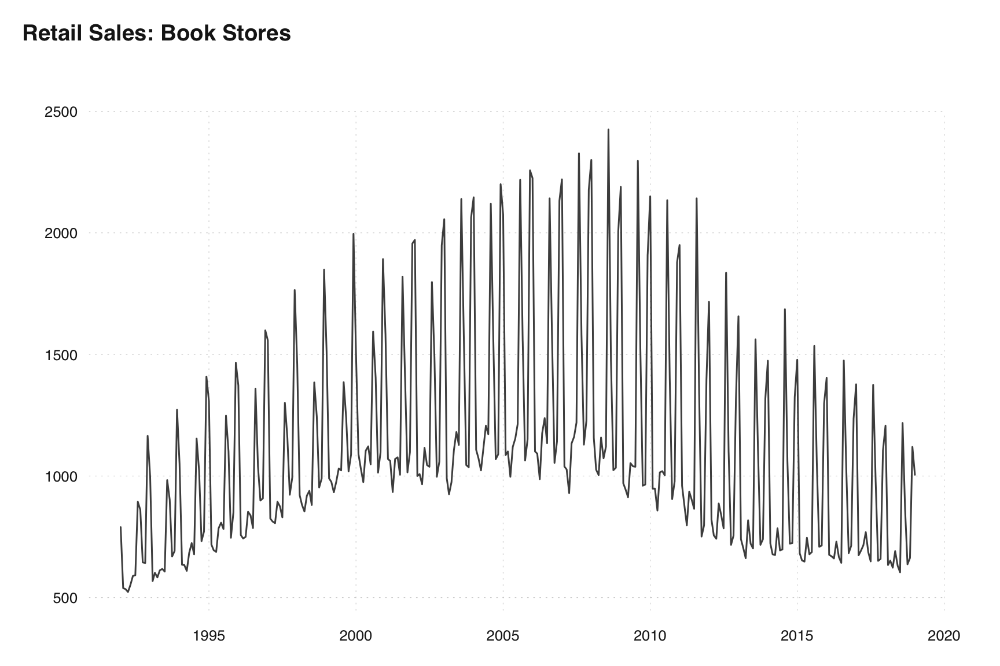
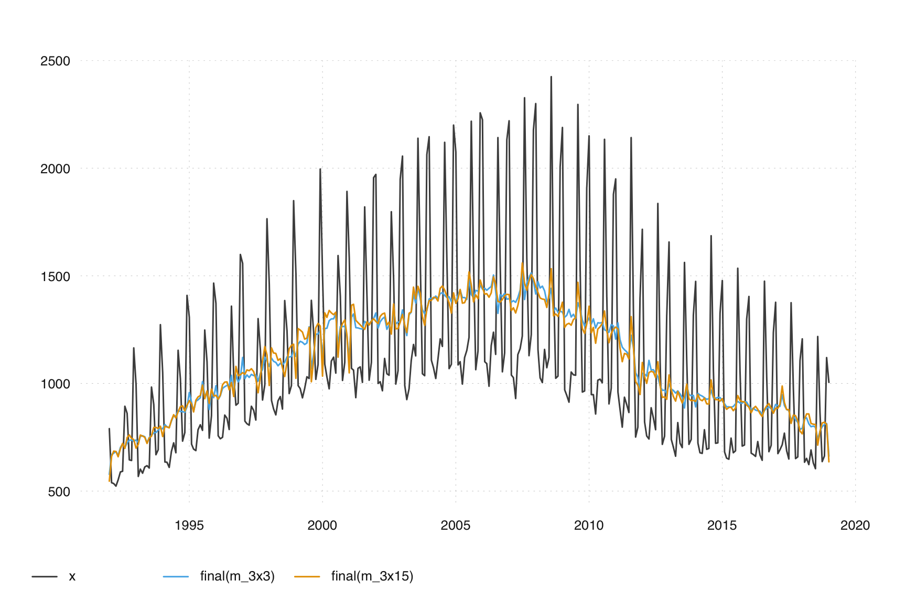
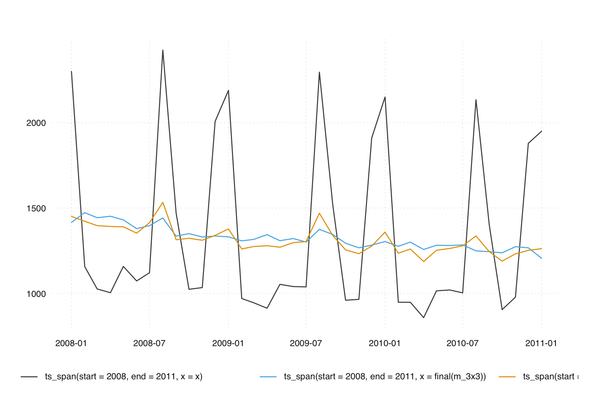

m <- seas(AirPassengers, x11 = list())
summary(m)
#>
#> Call:
#> seas(x = AirPassengers, x11 = list())
#>
#> Coefficients:
#> Estimate Std. Error z value Pr(>|z|)
#> Weekday -0.0029497 0.0005232 -5.638 1.72e-08 ***
#> Easter[1] 0.0177674 0.0071580 2.482 0.0131 *
#> AO1951.May 0.1001558 0.0204387 4.900 9.57e-07 ***
#> MA-Nonseasonal-01 0.1156204 0.0858588 1.347 0.1781
#> MA-Seasonal-12 0.4973600 0.0774677 6.420 1.36e-10 ***
#> ---
#> Signif. codes: 0 '***' 0.001 '**' 0.01 '*' 0.05 '.' 0.1 ' ' 1
#>
#> X11 adj. ARIMA: (0 1 1)(0 1 1) Obs.: 144 Transform: log
#> AICc: 947.3, BIC: 963.9 QS (no seasonality in final): 0
#> Box-Ljung (no autocorr.): 26.65 Shapiro (normality): 0.9908
#> Messages generated by X-13:
#> Warnings:
#> - Visually significant seasonal and trading day peaks have
#> been found in one or more of the estimated spectra.6 X-11
As discussed in Section 4.1, the primary objective of seasonal adjustment is to break down a time series into its trend, seasonal, and irregular components. X-13 provides two methods for this task: X-11 and SEATS. Both methods estimate these components by applying moving average filters to the series.
In this chapter, we will focus on the X-11 method, a non-parametric procedure that utilizes predefined moving-average filters on the data. SEATS, which will be covered in Chapter 7, derives its filters from the underlying ARIMA model.
6.1 Basics
Here, we describe the basic idea behind the seasonal decomposition in X-11. To perform a seasonal adjustment in R, you can use the following code:
As we have seen in Chapter 3, by providing an empty list, the default SEATS spec is overwritten and X-11 is activated. The line ‘X11 adj.’ in the summary indicates the use of X-11.
X-11 utilizes predefined moving-average filters on the data. It first estimates a trend and a seasonal component, while ensuring unbiased results at the series’ margins. It also uses extreme value correction to for more robust results.
Trend component
Estimating the trend component is the first step of an X-11 decomposition. The trend component is estimated by applying a symmetric moving average over the series. Each point in time is averaged using a set number of observations to the left and right of the series. Because the window is symmetric, we need the series to be extended by forecasts and backcasts.
Once the trend component is computed, we can subtract it from the original series to compute a de-trended series.
Seasonal component
To estimate the seasonal component, a seasonal filter is applied to the de-trended series. A seasonal filter is a symmetric moving average that is calculated by taking the mean of the same period across several years. For instance, the average for January would be computed using all the January values from the time series data, February would use all February values, and so on.
Avoid biases
To ensure unbiased results at the series’ margins, forecasts from the regARIMA model (Chapter 5) are used to extend the series. The regARIMA model also serves as the foundation of the initial steps in the X-11 algorithm to remove outliers and other regression effects before application of moving-averages.
Extreme Values
The X-11 method is sensitive to outliers. To correct for these, X-11 applies a specialized extreme value correction. This procedure identifies extreme values and replaces them. This results in a robust procedure that can automatically choose filters and identify extreme values without much user intervention.
Go in circles
X-11 iteratively refines this process. Each iteration enhances the estimated components by selecting more appropriate filters and managing outliers and regression effects.
In the default adjustment from above, a decomposition is run 3 times along with a pre-processing step to fit the regARIMA model. This procedure can be seen in great detail in Ladiray and Quenneville (2012). The overview of each step:
Ladiray, Dominique, and Benoit Quenneville. 2012. Seasonal Adjustment with the x-11 Method. Vol. 158. Springer Science & Business Media.
- Part A
-
Prior adjustments including regARIMA modeling of outliers, trading day and moving holiday effects.
- Part B
-
First application of seasonal decomposition. Calculate initial extreme value weights.
- Part C
-
Second estimation of seasonal and trend. Final estimation of extreme value weights.
- Part D
-
Final estimation of seasonally adjusted series, seasonal factors, trend, irregular. Combined factors incorporate the trading day and moving holiday regression effects estimated in Part A
6.2 A Simple Decomposition
Fundamentals
To deepen our understanding of the X-11 method, we begin with a manual approach in R. As a basic trend filter, we use a 2x12 moving average. The weights for this filter are distributed as follows: 1/24 for the first and last points, and 1/12 for each of the 11 points in between. We apply these weights to estimate the trend of the AirPassengers series:
observed <- AirPassengers
filter_trend <- c(1/24, rep(1/12, 11), 1/24)
trend <- stats::filter(observed, filter = filter_trend, sides = 2)
tsbox::ts_plot(observed, trend)After obtaining the trend, we estimate the seasonal component of the de-trended series using a 3x3 seasonal filter with weights (1,2,3,2,1)/9, applied consistently across the same season:
detrended <- observed - trend
filter_seas <- c(1, rep(0, 11), 2, rep(0, 11), 3, rep(0, 11), 2, rep(0, 11), 1) / 9
seasonal <- stats::filter(detrended, filter = filter_seas, sides = 2)
tsbox::ts_plot(detrended, seasonal)
Subtracting this seasonal estimate provides us with a rudimentary seasonal adjustment:
adjusted <- observed - seasonal
tsbox::ts_plot(observed, adjusted)
While this basic adjustment is insightful, it also reveals limitations, particularly at the series ends, underscoring the necessity for regARIMA modeling to extend forecasts. Another challenge is the interplay between trend and seasonality estimation—accurately estimating one in the presence of the other is complex.
These observations pave the way for the X-11 method, which iteratively refines this process. Each iteration enhances the estimated components by selecting more appropriate filters and managing outliers and regression effects.
6.3 Linear Filters
Frequency Domain
Time series analysis in the frequency domain offers a valuable perspective for understanding the behavior of time series data. If you are not familiar with the frequency domain, you may skip these sections.
For those interested, the frequency domain representation enhances the comprehension of how a linear filter affects a time series. Since both X-11 and SEATS utilize linear filters, this insight will deepen the understanding of whichever seasonal adjustment procedure is chosen.
Seasonal adjustment is highly motivated by the study, estimation, and ultimately removal of regular fluctuations in a time series. The words regular fluctuations immediately lead us to trigonometric functions sine and cosine. It turns out, there exist two equivalent representations of a time series. The first, and usually easier for beginners to understand, is the time domain representation. This is expressing how \(X_t\) evolves as time \(t\) evolves. For example, an MA(1) time domain representation:
\[X_t = w_t + \theta w_{t-1}\]
The second, is a frequency domain representation of a series. Here, \(X_t\) is represented as the sum of trigonometric functions. More specifically, the spectral density of \(X_t\) is the fourier transform of the acf of the series. \[f_X(\nu) = \sum_{h = - \infty}^{\infty} \gamma(h) e^{-2\pi i \nu h}\] For example, the spectral density of an MA(1) is: \[f_X(\nu) = \sigma^2 \left( 1 + \theta^2 + 2\theta\cos(2\pi\nu) \right)\]
The important concept here is to understand that these representations are equivalent; meaning, they contain the same information about a time series, such as encoding the ACF function.
Where does the term “White Noise” come from?
The spectral density of an uncorrelated sequence with variance \(\sigma^2\) is simply \(f(\nu) = \sigma^2\). Notice this is not a function of any frequencies, but just a constant for any \(\nu\). Hence, it is a stochastic process that equally weights all frequencies in the spectrum. This is precisely where the name white noise comes from, as white light has the same property of reflecting all color bands equally, combining to produce white light.
Now that we know we can express a time series either in the time domain or as a sum of sin and cosine curves, we get to the important part for seasonal adjustment - how does a linear filter effect the input series? Assume we want to pass a moving-average linear filter over our data \(X_t\) with weights \(\ldots, w_{-2}, w_{-1}, w_{0}, w_{1}, w_{2}, \ldots\). Assume the output of the linear filter will be \(Y_t\) such that \[Y_t = \sum_{j = -\infty}^{\infty} w_j X_{t+j} = \ldots + w_{-2}X_{t-2} + w_{-1}X_{t-1} + w_{0}X_{t} + w_{1}X_{t+1} + w_{2}X_{t+2} + \ldots\] This type of linear filter can be expressed as a linear operator in terms of the backshift operator \(B\) , where \(BX_t = X_{t-1}\) and \(B^{-1}X_t = X_{t+1}\). \[W(B) = \ldots + w_{-2}B^2 + w_{-1}B + w_{0} + w_{1}B^{-1} + w_{2}B^{-2} + \ldots\] and hence \(Y_t = W(B)X_t\). We can now express the spectral density of \(Y_t\) in terms of the input spectral density \(X_t\). \[f_Y(\nu) = \underbrace{\lvert W(e^{2\pi i \nu}) \rvert^2}_{\text{Square Gain Function}} f_X(\nu)\]
There is some mathematical machinery needed when understanding exactly what the square-gain function, \(\lvert W(e^{2\pi i \nu}) \rvert^2\), is. However, for the sake of this text we just know that it tells us exactly the frequencies of \(X_t\) that amplified in the output \(Y_t\) as well as the frequencies of \(X_t\) that will be annihilated (when the square-gain function equals 0).
Let’s look at an example spectrum for the airline model. Instead of deriving the result, the following code simulates observations from an airline model with \(\theta = .5\) and \(\Theta = .9\). The spectrum is then estimated using a parametric estimator using the spec.ar function. Details of this estimation can be found in Brockwell and Davis (1991).
Brockwell, Peter J., and Richard A. Davis. 1991. Time Series: Theory and Methods. New York: Springer-Verlag.
library(forecast)
#> Registered S3 method overwritten by 'quantmod':
#> method from
#> as.zoo.data.frame zoo
set.seed(123)
model <- Arima(y = ts(rnorm(1000),freq=12),
order=c(0,1,1),
seasonal=c(0,1,1),
fixed=c(theta=-0.5, Theta=-0.9))
x <- simulate(model, nsim=10000)
fx <- spec.ar(x, order = 36, plot = TRUE)
# Pass a trend filter over data
x_trend <- stats::filter(x, filter = filter_trend, sides = 2)
fx_trend <- spec.ar(x_trend, na.action = na.pass)
# Remove trend to leave seasonal + irregular
x_seasonal <- x - x_trend
fx_seasonal <- spec.ar(x_seasonal, na.action = na.pass)


6.4 X-11 Filters
In the X-11 method, the choice of moving average filters plays a crucial role in seasonal adjustment. Users have the flexibility to select the length of both the trend and seasonal moving average filters, impacting the stability and responsiveness of the seasonal component. For example, the following model uses a short 3x1 filter to identify the seasonal component:
m_short <- seas(AirPassengers, x11.seasonalma = "s3x1")
plot(m_short)On the other hand, the following uses a long 3x9 filter:
m_long <- seas(AirPassengers, x11.seasonalma = "s3x9")
plot(m_long)
Generally speaking, longer filters imply a more stable seasonal component and shorter filters a more changing seasonal pattern. We can see this by comparing the monthplot() outputs of the estimations.
monthplot(m_short)
As you can see, the seasonal component is smoother with the longer filter:
monthplot(m_long)Longer filters involve more data points in the calculation of the seasonal component at each time point. Therefore, they typically result in smaller revisions when new data is added to the series. However, these revisions can impact historical data values further back in the time series.
In contrast, shorter filters, which use fewer data points, are more likely to produce larger revisions with each new data addition. These revisions, while more significant, extend less far back into the historical data.
If a user does not select a filter, the program will choose the final seasonal filter automatically; this option can also be invoked by setting seasonalma = msr. This is done using the moving seasonality ratio (msr) procedure. The msr procedure works as follows: For the first two seasonal adjustment iterations (A and B), a 3×3 moving average is used to calculate seasonal factors. Then a 3×5 filer is used to calculate the final seasonal factor. The value I/S is calculated as the global moving seasonality ratio and the filter chosen is given in Table 6.1.
| GMSR Range | Filter |
|---|---|
| GMSR ≤ 2.5 | 3x3 |
| 3.5 < GMSR ≤ 5.5 | 3x5 |
| GMSR > 6.5 | 3x9 |
To understand the implications of filter length, consider the finite set of options available during an X-11 adjustment. Table 6.2 details the different filters that can be applied to extract the seasonal component of the series.
| Value | Description |
|---|---|
s3x1 |
3×1 moving average |
s3x3 |
3×3 moving average |
s3x5 |
3×5 moving average |
s3x9 |
3×9 moving average |
s3x15 |
3×15 moving average |
stable |
Stable seasonal filter. A single seasonal factor for each calendar month or quarter is generated by calculating the simple average of all the values for each month or quarter (taken after de-trending and outlier adjustment). |
x11default |
A 3×3 moving average is used to calculate the initial seasonal factors in each iteration, and a 3×5 moving average to calculate the final seasonal factors. |


6.5 Extreme value
As mentioned above, X-11 is sensitive to outliers, and applies its own extreme value adjustment (see the box for the differences between outliers and extreme values).
Outliers and Extreme values
The terms outlier and extreme value seem interchangeable. In X-13, these refer to very different types of effects. An outlier is identified by the regARIMA model in Part A (see below) of the X-11 method. An extreme value is a value that is large enough to effect the results of a moving-average filter but is not identified by the regARIMA automatic modeling identification. Outliers are prior-adjusted out of the series, while extreme values are replaced within the X-11 procedure.
Both types end up in the seasonally adjusted series. Extreme values are assigned to the irregular component and are hence included in the seasonally adjusted series. Outliers get included in Part D (see below) when X-11 calculates the final seasonal factors using the original series including outlier effects.
We will discuss extreme values and outliers in more detail in Chapter 10.
In the X-11 method, along with the regressors defined in the regARIMA model (such as additive outliers or level shifts), there’s a distinct process for adjusting extreme values. After an initial trend estimation, X-11 replaces extreme values according to the following procedure:
flowchart LR
A(Estimate standard deviation <br> of irregular, sigma)-->B(Compare values to <br> multiples of sigma)
B-->C(value smaller than 1.5 sigma)
B-->D(value between 1.5 and 2.5 sigma)
B-->E(value larger than 2.5 * sigma)
C --> F(value unchanged)
D --> G(value linearly weighted)
E --> H(value fully weighted)
De-trended values (in X-13 parlance, they are sometimes called SI-ratios) are replaced with an average of the two nearest values from the same period. E.g., if January 1958 is considered to be an extreme value, the values of January 1956, 1957, 1959 and 1960 will be used.
If a values is larger than the larger limit, it is fully replaced. If a value is smaller than the lower limit, it is not replaced. If a value lies between the limits, it a weighted average between the two surrounding values and the value itself is used.
Note, that only non-replaced values are used to derive the replacement values. Hence, if a very small limit is used, the values that are used to derive the replacement values may be far way.
Users can modify the sigma thresholds (sigmalim) for extreme value conversion within the X-11 specification. Choosing smaller values lead to more extreme values and should typically result in a smoother seasonal component. This option, defined as a two-length vector that specifies when weighting should begin and when full weight of zero should be applied. Between the endpoints of the specified vector, a linear weight will be applied.
Extreme value choices can significantly influence the seasonal adjustment outcome. For example, the default values for in AirPassengers adjustment look as follows:
m <- seas(AirPassengers, x11 = "")
unmodified_SIratio <- series(m, "d8")
#> To speed up, extend the `seas()` call (see ?series):
#> seas(x = AirPassengers, x11 = "", x11.save = "d8")
modified_SIratio <- series(m, "d9")
#> To speed up, extend the `seas()` call (see ?series):
#> seas(x = AirPassengers, x11 = "", x11.save = "d9")
seasonal_factors <- series(m, "d10")
tsbox::ts_plot(cbind(unmodified_SIratio, modified_SIratio, seasonal_factors))An alternative way to inspect output of X-13 is to use the out() function, which accesses the X-13 HTML output that contains a plethora of information:
out(m)If we change x11.sigmalim to c(1, 2), we get the following result:
m_small_limits <- seas(AirPassengers, x11 = "", x11.sigmalim = c(1, 2))
unmodified_SIratio <- series(m_small_limits, "d8")
#> To speed up, extend the `seas()` call (see ?series):
#> seas(x = AirPassengers, x11 = "", x11.sigmalim = c(1, 2), x11.save = "d8")
modified_SIratio <- series(m_small_limits, "d9")
#> To speed up, extend the `seas()` call (see ?series):
#> seas(x = AirPassengers, x11 = "", x11.sigmalim = c(1, 2), x11.save = "d9")
seasonal_factors <- series(m_small_limits, "d10")
tsbox::ts_plot(cbind(unmodified_SIratio, modified_SIratio, seasonal_factors))6.6 Case study: Choose a filter length
Suppose we want to choose a filter length for the Retail Sales in Book Stores before the 2020 covid pandemic.
x = ext_fred("MRTSSM451211USN") |>
tsbox::ts_span(end = 2019)
tsbox::ts_plot(x, title = "Retail Sales: Book Stores")
The basic principles outlined above tell us we want a long filter for stable seasonal patterns and short filter for more variable seasonal patterns.
m_3x3 = seas(x, x11.seasonalma = "s3x3")
m_3x15 = seas(x, x11.seasonalma = "s3x15")If we plot the final seasonal adjustments
ts_plot(ts_c(x, final(m_3x3), final(m_3x15)))
we see the 3x15 seasonal filter is too long and is allowing seasonality to leach into the final seasonally adjusted series. In subsequent chapters we will learn diagnostic tools to detect this but we can see the seasonality if we zoom in a bit and focus on the August months. We should not see dramatic spikes in any months (this is the whole point of seasonal adjustment!), however the poor performance of the 3x15 seasonal filter and the peaks in multiple August values in a row remain.
ts_plot(
ts_c(
ts_span(start = 2008, end = 2011, x = x),
ts_span(start = 2008, end = 2011, x = final(m_3x3)),
ts_span(start = 2008, end = 2011, x = final(m_3x15))
)
)
6.7 Exercises
Exercises
-
Performing an Automated Seasonal Adjustment with X-11:
- Use the
seasonalpackage to perform an automated seasonal adjustment on thefdeathsdataset using the X-11 method. - Plot the results and summarize the key components of the model.
- Use the
-
Inspecting the Seasonal Component with
monthplot():- Use the
monthplot()function to inspect the seasonal component of the adjustedfdeathsseries. - Describe the observed seasonal pattern.
- Use the
-
Adjusting Filter Length:
- Adjust the seasonal filter length to a longer filter (
s3x15) for thefdeathsdataset. - Use the
monthplot()function to compare the seasonal components between the default and longer filter. - Describe the differences observed.
- Adjust the seasonal filter length to a longer filter (
-
Inspecting Extreme Value Adjustment:
- Use the
out()function to inspect the extreme value adjustment for thefdeathsdataset. - Identify the default values for
sigmalimused in the adjustment.
- Use the
-
Modifying
sigmalimValues:- Change the
sigmalimvalues to lower thresholds for thefdeathsdataset. - Plot the results and use the
monthplot()function to see if the changes affect the seasonal component. - Describe any differences observed.
- Change the